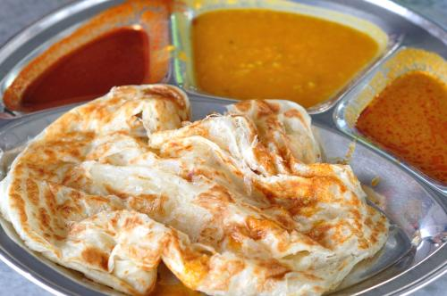

黎锦轩
一个来自马来西亚的留学生，单身汪一只，因为种种遭遇，来到了这里。爱好是睡觉，兴趣是睡觉，喜欢的东西是床（ 还是有其它的 ~ ）。总之，我会为了在未来可以一天睡24小时而努力学习的。（虽然觉得可能性不大 @^_^@ ）

来自：马来西亚（Malaysia）
马来西亚是一个多元种族的国家，在各种族文化的碰撞下，产生了很多有趣的东西，无论是在饮食，习俗，还是在习惯方面。而我喜欢其饮食方面，毕竟多元种族的国家，饮食也变的多样化，所以选择也随着变多了。